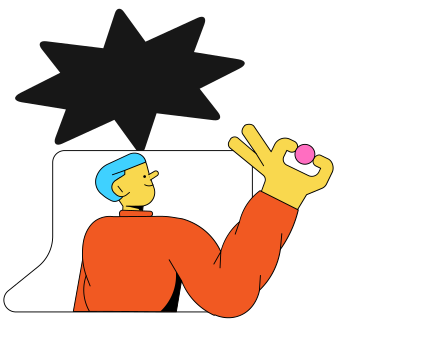
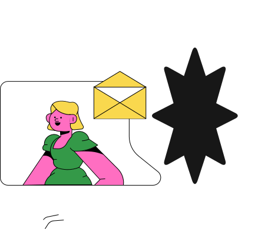
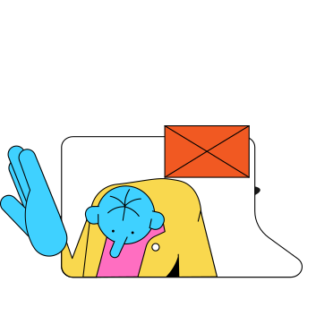

Яндекс и Google — самые крупные рекламные сети в России и мире
Для кого?

Желающим освоить digital-профессию

Уже работаете
с трафиком
с трафиком

Интернет-маркетологам
Курс создан лично @smmagnat, в который заложен весь его 10-летний опыт SMM


Курс включает все грани SMM: копирайтинг, таргетинг, стратегии, контент
Преподаватель
Василий Щербаков
Занимаюсь таргетингом больше двух лет. За это время освоил более 20 млн рекламного бюджета, давая клиентам результат. Знаю, как клиентам делать ROAS более 1000%.
instagram
Часто задаваемые вопросы
Смогу ли я научиться писать с нуля?
В некоторых нишах действительно большая конкуренция в поиске, а клики могут доходить до 500 и даже 1000 рублей. Но помимо поиска есть реклама в сетях, где можно привлекать трафик на сайт намного дешевле, нежели в поиске. Он будет холоднее, но его будет больше и он скорее всего будет окупаться, если правильно подойти к настройке, грамотно сделать сайт, вести на правильную посадочную страницу, проработать УТП и так далее.
Помимо этого есть возможность показывать объявления тем, кто уже был на вашем сайте. Такая аудитория будет и дешевле и теплее.
Помимо этого есть возможность показывать объявления тем, кто уже был на вашем сайте. Такая аудитория будет и дешевле и теплее.
Моей нише/нише моего клиента подойдет контекстная реклама?
Проверить спрос на услуги или товары можно в сервисе wordstat.yandex.ru
Введя запрос потенциального клиента можно увидеть количество запросов в месяц в поиске Яндекса. Также есть возможность настраивать рекламу по социально-демографическим данным и интересам.
В Яндекс и Google есть инструменты для настройки медийной рекламы - для повышения узнаваемости бренда и увеличения лояльности.
Введя запрос потенциального клиента можно увидеть количество запросов в месяц в поиске Яндекса. Также есть возможность настраивать рекламу по социально-демографическим данным и интересам.
В Яндекс и Google есть инструменты для настройки медийной рекламы - для повышения узнаваемости бренда и увеличения лояльности.
Зачем устанавливать счетчики аналитики, лезть в код сайта, если можно просто настроить рекламу и следить за ценой клика?
Цена клика вообще не показатель доходности бизнеса.
Пример: цена клика в поиске 40 рублей и из каждых 100 человек, заходящих на сайт покупают товар 10 человек. Цена клика в сетях 5 рублей, а из каждых 100 человек покупает 1. В первом случае цена за одного клиента составит 400 рублей, во втором случае 500 рублей.
Откуда клиенты обходятся дешевле показывают постоянные тесты форматов объявлений, креативов итд.
Помимо того, откуда приходят заказы в системах аналитики можно увидеть с каких регионов и городов более дешевые клиенты, на каких устройствах и операционных системах у пользователей возникают проблемы на страницах сайта. Также можно посмотреть запись экрана как пользователи взаимодействуют с вашим сайтом, на какие элементы больше кликают, как скролят страницы, таким образом внедрять изменения, чтобы людям было удобно сайтом пользоваться. И еще много много полезного можно увидеть в системах аналитики.
Пример: цена клика в поиске 40 рублей и из каждых 100 человек, заходящих на сайт покупают товар 10 человек. Цена клика в сетях 5 рублей, а из каждых 100 человек покупает 1. В первом случае цена за одного клиента составит 400 рублей, во втором случае 500 рублей.
Откуда клиенты обходятся дешевле показывают постоянные тесты форматов объявлений, креативов итд.
Помимо того, откуда приходят заказы в системах аналитики можно увидеть с каких регионов и городов более дешевые клиенты, на каких устройствах и операционных системах у пользователей возникают проблемы на страницах сайта. Также можно посмотреть запись экрана как пользователи взаимодействуют с вашим сайтом, на какие элементы больше кликают, как скролят страницы, таким образом внедрять изменения, чтобы людям было удобно сайтом пользоваться. И еще много много полезного можно увидеть в системах аналитики.
У меня нет сайта. Контекстная реклама мне не подойдет?
У Яндекс и Google есть встроенные бесплатные конструкторы сайтов, в которых можно быстро и легко создать как лендинг, так и полноценный сайт.
Я продаю наркотики/оружие/людей на органы будут ли у меня проблемы с прохождением модерации?
Разрешенные, запрещенные и ограниченные тематики можно узнать в официальных справках: Яндекс и Google.
А также более детально в чатах поддержки: Яндекс и Google.
Помогут ли мне разобрать мои тексты и указать на ошибки?
Для этого в курсе и есть практическая часть, которая разработана по принципу «от простого к сложному» и охватывает множество сфер, где вообще встречаются тексты. Все задания я проверяю лично, подчёркивая каждое слово, если это требуется и поясняю каждую ошибку.
Пригодится ли курс другим людям из SMM-сферы? Тартетологам? Маркетологам? Контент-менеджерам?
Да, и в общем смысле и конкретно в сфере SMM. От основ текста и разбора всех фундаментальных проблем курс переходит к тексту в области маркетинга, а далее в область соц.сетей.
Можно ли обратиться с вопросом после окончания обучения?
Можно не только обратиться, но и получить ответ/совет/рекомендацию/помощь, а также вакансию для копирайтеров.
Выдаётся ли сертификат по окончанию курса?
Да, по окончанию курса и прохождении практической части выдаётся сертификат.